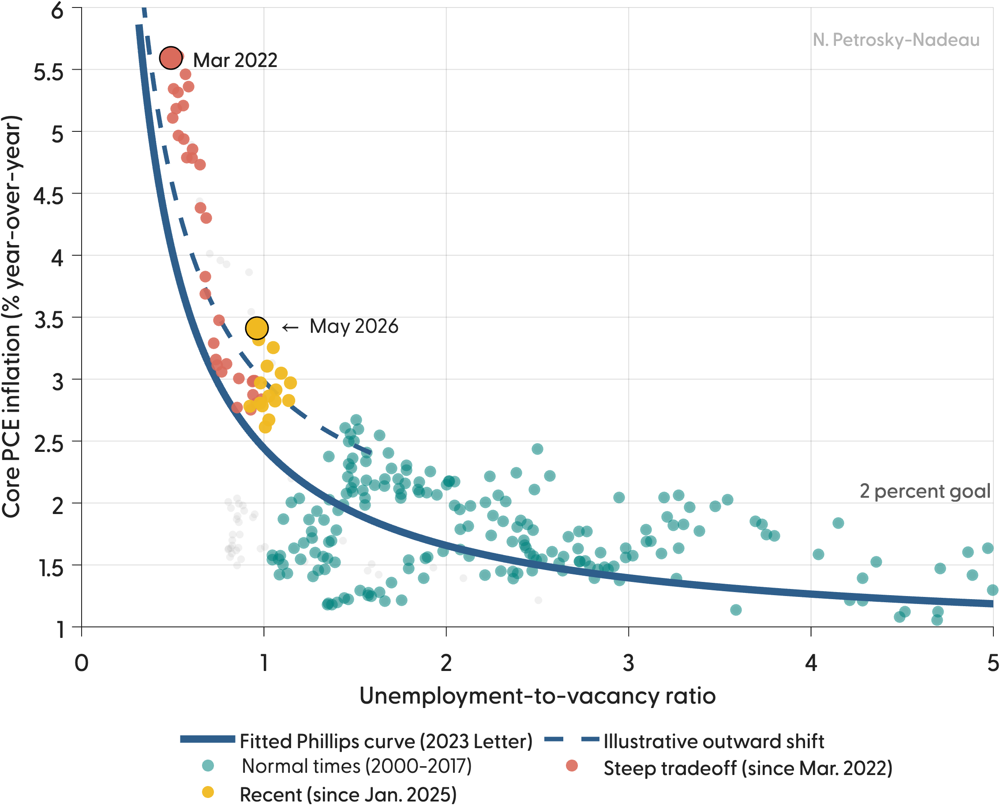

Recent Work

Economic Note 2026-04
When the Curve Moves, It’s Hard to Stick the Landing
Since January 2025, core PCE inflation has run about 0.9 percentage point above the stable Phillips curve from the 2023 Economic Letter, suggesting the curve is shifting out.
American Economic Journal: Macroeconomics
January 2026
Latest Publication
From Deviations to Shortfalls
The effects of the FOMC’s new employment objective: a shortfalls rule raises average inflation by 90 basis points and reduces the likelihood of a binding zero lower bound.